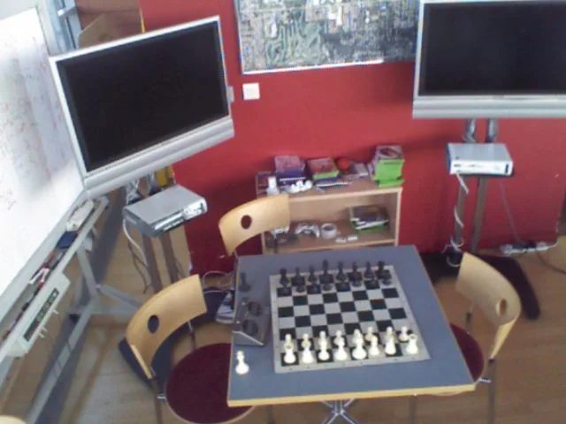

GRIP：把高斯渲染当作跨模态桥的图像—点云配准
GRIP: Gaussian Rendering as a Cross-Modal Bridge for Image-to-Point Cloud Registration
先用初始位姿把无序点云描述子以高斯泼溅渲成图像对齐的特征图，让两种模态在同一像素网格上做双向注意力交互，再解码回点云节点做稠密匹配与位姿估计。
inlier ratio
inlier ratio
total inference time
作者、单位与技术谱系 · Research context
作者与单位
研究脉络
- 2D3D-MATR（Huang et al., CVPR 2023）方法基座关系：第一阶段（粗到细检测无关匹配 + PnP-RANSAC）整体取自它，本文只重构第二阶段[arXiv 官方 HTML v1]
- Diff-Reg（Wang et al., 2024）与 Diff2I2P（Zeng et al., 2024）上游方法（同期竞品）关系：同属粗到细 2D—3D 配准路线，通过扩散过程精化匹配矩阵或蒸馏跨模态知识，本文的差异是改表示空间[arXiv 官方 HTML v1]
- R23Net（Cheng et al., CVPR 2026）上游方法（同期竞品）关系：用强化学习筛选高价值区域解决非重叠与低质量匹配，是本文内点率的主要对照[arXiv 官方 HTML v1]
- 各向异性高斯泼溅渲染（Kerbl et al., 2023；特征泼溅路线）方法基座（渲染机制来源）关系：提供可微 alpha 合成与协方差参数化，本文把它用在“泼溅特征向量”而非泼溅颜色[arXiv 官方 HTML v1]
合作网络
- 论文署名与单位GRIP 论文署名作者 → ISIR（Sorbonne Université / CNRS / INSERM，巴黎）关系：署名单位[arXiv 官方 HTML v1]
- 跨单位共同署名ISIR（巴黎） → Univ Rennes / Inria / CNRS / Irisa（雷恩）关系：共同署名（同一篇论文内的机构合作）[arXiv 官方 HTML v1]
- 对照实现的依赖GRIP 的公平对照设置 → 2D3D-MATR 与 Diff-Reg 的官方实现关系：明确技术依赖（复用官方代码）[arXiv 官方 HTML v1]
- 资助与算力支持法国 ANR 项目 MARSurg（ANR-21-CE19-0026）与 GENCI-IDRIS 超算（2026-AD011015228R1） → GRIP 研究关系：资助关系[arXiv 官方 HTML v1]
作者、单位、资助与对照实现方式均来自论文作者块与致谢；技术接续来自相关工作与方法章节的显式表述。跨机构关系只记录署名事实，未发现公开证据支持的合作项目、师生或指导关系，不作推断。
方法本质拆解 · What actually changed
是不是微调？
是分阶段训练而不是微调现成模型：第一阶段按 2D3D-MATR 范式训练（含 DINOv2 增强的图像骨干与 KPFCNN 点云骨干），第二阶段以第一阶段冻结的参数与初始位姿为条件训练渲染器、交互 transformer、两个解码器与匹配头，损失沿用粗到细 circle loss，优化器为 Adam 且学习率逐轮衰减。没有任何第三方预训练权重被改动后再放回，也没有第三阶段。
有没有额外约束？
约束来自几何前提而不是损失项：泼溅渲染依赖相机内参与一个必须足够准确的初始位姿，渲染前会丢弃相机系下深度无效的点与投影后远离图像域的基元；高斯基元中心的学习偏移被初始化为零且不加显式正则；交互阶段靠归一化 2D 坐标的 Fourier 位置编码把 token 约束到同一网格坐标上；位姿阶段用置信度排序约束采样顺序，并用给定的重投影误差像素阈值判定内点。
推理/后端到底做了什么？
推理是一条两阶段前馈链：第一阶段用 PnP-RANSAC 给出初始位姿，第二阶段渲染 3D 特征到粗网格、做双向交叉注意力、把特征采样回点节点与图像解码器，再重做粗到细匹配并求解最终位姿。没有全局 BA、没有因子图、没有测试期优化或迭代渲染回馈；把位姿求解换成置信度引导 RANSAC 或 EPro-PnP 是提高效率的工程选择，而不是引入新的后端。
方法本质是什么？
本质是把“跨模态匹配”从两个异构描述子之间的直接比较，改成“先把几何渲染到图像空间、在像素对齐的共享表示里交互、再采样回几何节点”的闭环。它改变了跨模态交互发生的空间而不是匹配损失；增加的唯一前提是一个足够准的初始位姿，因此它把问题从“表示差距”转移到了“初值质量”，作者也用 Stairs 场景明确承认了这一点。它没有做的是：不解决任意初始化、不做时序、不做多假设，也不改变后端求解器类型。
输入=RGB 图像 + 点云 + 一个粗略初始位姿；改变的位置=跨模态交互所在的表示空间（无序 3D 域 → 像素对齐的渲染特征图）；动作=高斯特征泼溅渲染 + 双向移位窗口交叉注意力 + 层次化回传采样 + 置信度引导位姿求解；直接效果=RGB-D Scenes V2 内点率 60.9%、7-Scenes 71.9%，且总推理时间相对扩散式对照降低 27.8–40.2%。

动机与问题Motivation
动机与问题
论文把跨模态配准的结构性困难讲得很清楚：图像描述子由 FPN 与 ResNet 一类骨干在规则 2D 网格上产生，主要编码外观与语义；点云描述子由 KPFCNN 一类骨干在无序 3D 域产生，编码几何属性。既有方法（2D3D-MATR、Diff-Reg、Diff2I2P）虽在最粗层引入 transformer 做跨模态交互，但两种模态在匹配阶段仍结构性错位——一个排在稠密 2D 网格上，一个索引在无序点集上，因此只增强了上下文通信而没有统一匹配所在的表示空间；而且 transformer 只出现在粗层、位于骨干之外，细层特征拿不到跨模态线索。作者进一步指出一个被忽视的线索：一旦有了初始位姿，它本身就能把 3D 点与图像位置直接关联起来，而既有的粗到细流程并没有利用这个位姿在精化前构造“图像对齐的点云表示”。这两个观察共同定义了本文要改的位置：不是改损失或匹配矩阵，而是改跨模态交互发生所在的空间。
方法Method
方法总览
GRIP 是两阶段框架。第一阶段沿用 2D3D-MATR 的检测无关粗到细范式：用 KPFCNN 提点云特征、ResNet-FPN 提图像特征（最深图像特征用 DINOv2 描述子增强），粗层用跨模态 transformer 精化后按相似度做 top-k 选择得到粗对应，再在每个粗对应内部做稠密像素—点相似度与互 top-k 选择，最后用 PnP-RANSAC 估计初始位姿。第二阶段是本文主体，包含四个模块：① 点到像素特征渲染器，用初始位姿把每个粗 3D 点实例化为一个可渲染高斯基元（含各向异性 3D 高斯形状、不透明度与一个待泼溅的特征向量），这些属性都由点描述子经学习投影得到，再按前到后顺序 alpha 合成到粗图像网格；② 像素对齐交互 transformer，把渲染特征图与图像特征图投到共享维度、加 Fourier 位置编码后做双向移位窗口交叉注意力，让渲染特征吸收图像语义、图像特征吸收几何线索；③ 层次化跨模态传播，把精化后的渲染特征按 2D 投影双线性采样回点节点、与原始粗点描述子融合后送入 KPFCNN 解码器，图像侧则用 FFN 融合后进入 FPN 式解码器；④ 匹配与位姿估计，重做同样的粗到细匹配，并用置信度引导的 PnP-RANSAC（按相似度排序优先采样高置信度子集）或 EPro-PnP 加权求解输出最终位姿。
关键技术细节
渲染器之所以用软泼溅而不是硬投影，论文给了明确理由：硬投影把每个 3D 特征指派到单一像素，在小位姿扰动下极易错位，而高斯泼溅把特征响应摊到局部邻域，使邻近 token 也能保留几何线索，这在不完美初始位姿下尤其重要；消融也验证了这一点（把高斯泼溅换成硬投影，IR 60.9% 降到 59.3%、RR 84.9% 降到 82.3%，而耗时几乎不变）。每个高斯基元由中心、协方差（由旋转矩阵与缩放矩阵参数化）、不透明度与特征向量构成，中心带一个初始化为零的学习偏移且不加显式正则；渲染前丢弃相机坐标系下深度无效的点与投影后远离图像域外的基元，然后按深度前到后排序、用 alpha 合成累加透过率。交互 transformer 的关键是把两个 token 序列都关联到归一化 2D 坐标并用 Fourier 位置编码注入，使注意力“知道”每个 token 的像素位置且保持对齐，再做点云→图像与图像→点云两个方向的移位窗口交叉注意力。位姿估计侧给出两个选项：置信度引导的 RANSAC 变体让最小集优先从高置信度子集采样，从而把最大迭代数大幅压低（论文给出的对照是既有方法使用的迭代数高于本文），每个假设在全部对应上用重投影误差与给定像素内点阈值评估；另一选项是用对应置信度直接求解的 EPro-PnP 加权求解器，只需很少迭代。实现上第一阶段训练后参数在第二阶段全部冻结，第二阶段以第一阶段预测的初始位姿为条件训练。

实验Experiments
实验设置
数据集是室内 RGB-D 配准常用的两个基准。RGB-D Scenes V2 含 14 段室内 RGB-D 视频，按前作做法每 25 帧深度融成一个点云片段、每 25 帧取一张 RGB 配对，只保留重叠率高于设定阈值的配对，划分出 1,748 个训练对、236 个验证对与 497 个测试对。7-Scenes 由手持 Kinect 采集的 46 段序列组成，场景尺度与视角变化更大，同样按重叠率过滤后得到 4,048 个训练对、1,011 个验证对与 2,304 个测试对。指标是配准召回（RR）、内点率（IR）与特征匹配召回（FMR），主指标沿用前作设定的 10 cm 阈值 RR，并额外在 2–10 cm 阈值上扫描 RR；对照包括 P2-Net、Predator-2D3D、2D3D-MATR、Diff2I2P、Diff-Reg 与 R23Net，其中 2D3D-MATR 与 Diff-Reg 用官方实现在同一环境中复现以保证公平。实现为 PyTorch、单张 32 GB Tesla V100，损失沿用粗到细 circle loss，Adam 优化并逐 epoch 衰减学习率；2D 骨干是 4 阶段 ResNet+FPN、点云骨干是 3 阶段 KPFCNN，第二阶段把用于泼溅的点特征投到给定维度，交互 transformer 用移位窗口双向交叉注意力。
实验数字与比较
① RGB-D Scenes V2（表 1，IR / FMR / RR）：GRIP 为 60.9 / 91.8 / 84.6（EPro-PnP）与 60.9 / 91.8 / 84.9（置信度引导 RANSAC）；R23Net 43.4 / 93.6 / 77.0，Diff-Reg 37.7 / 91.4 / 85.7，Diff2I2P 36.9 / 77.1 / 60.5，2D3D-MATR 32.4 / 90.8 / 56.4，P2-Net 12.2 / 59.6 / 38.4。即内点率领先次优 17.5 个百分点、相对基线 32.4% 提升约 88%，而 RR 以 1.1 个百分点之差居第二。② 7-Scenes（表 2）：GRIP 71.9 / 89.8 / 84.1–84.2；R23Net 54.9 / 93.2 / 83.8，Diff2I2P 53.2 / 92.2 / 83.0，Diff-Reg 52.0 / 91.6 / 83.8，2D3D-MATR 50.1 / 92.1 / 75.8；内点率相对 2D3D-MATR 绝对提升 21.8 个百分点、相对次优 17.0 个百分点，RR 为全表最好，但 FMR 略低。③ 推理时间（表 3，RGB-D V2）：GRIP 网络前向 0.790 s 略高于 Diff-Reg 的 0.702 s，但位姿估计阶段只有 0.009 s（EPro-PnP）或 0.175 s（置信度引导 RANSAC），总推理 0.799 s 与 0.965 s，相比 Diff-Reg 的 1.336 s（其中位姿 0.634 s）分别降低 40.2% 与 27.8%。④ 阈值扫描（图 2）：两个数据集上 RR 随阈值从 2 cm 放宽到 10 cm，GRIP 在严格阈值下更高，阈值放松后 Diff-Reg 逐渐逼近并在 RGB-D Scenes V2 上反超。
消融/失败边界
消融在 RGB-D Scenes V2 上逐项替换（表 4，IR / RR）：基础基线（2D3D-MATR 流程）为 32.4 / 56.4；仅把第一阶段换成带 DINOv2 的版本为 44.2 / 78.1（RANSAC）与 44.2 / 77.3（置信度引导），说明骨干增强本身贡献了大部分初始提升；第二阶段去掉像素对齐交互 transformer 后为 42.5 / 64.7，即 PAIT 是第二阶段最大的单项贡献；保留渲染与 PAIT 但去掉层次化解码为 52.4 / 83.9；把高斯泼溅换成硬投影为 59.3 / 82.3（相对完整版 IR 低 1.6 个百分点、RR 低 2.6 个百分点，且耗时几乎不变）；完整版为 60.9 / 84.9；作为上界参考，一阶段“oracle”为 99.0 / 100.0、两阶段 oracle 为 78.0 / 99.9，说明瓶颈仍在匹配与位姿求解而非表示容量。失败边界写得比多数论文诚实：主要限制是对初始位姿的依赖，因为泼溅要用它把 3D 特征投到图像平面，初始位姿退化或不准确时渲染表示会与图像错位，像素对齐 transformer 就收到误导性证据；作者给出 7-Scenes 的 Stairs 场景作为实例——基线初始化本身就只有 RR 28.4%、IR 18.1%，GRIP 只把它提升到 RR 31.1%、IR 28.6%，明显低于其它场景的增益幅度。
局限与迁移Limitations & Transfer
局限与待核验
作者明确承认的限制只有一条核心：方法依赖初始位姿，应当被视为“位姿条件化的渲染式精化框架”，而不是能处理任意初始化的解决方案；并用 Stairs 场景量化了这一依赖的后果。作者给出的两个未来方向也间接承认了边界——把 GRIP 接入生成/扩散式配准框架，在流形上从噪声变换逐步精化，或在初始位姿附近采多个位姿候选、各自生成泼溅表示以扩大收敛域。我们的待核验项有四条：① 论文中若干关键超参（第一阶段训练轮数、学习率衰减系数、输入图像分辨率、最粗特征网格分辨率、RANSAC 迭代数与内点阈值像素数、泼溅特征维度、窗口大小）在官方 HTML 中被公式渲染吞掉，需回到 PDF/TeX 才能复现；② 表 4 中“硬投影”两行未给出耗时数值，因此“几乎没有运行时收益”这一说法需重算；③ 评测只覆盖两个室内 RGB-D 基准、都来自同一类手持 Kinect 数据，未报告室外、激光雷达点云或大尺度场景的结果，跨模态泛化性未知；④ FMR 略低于最优值这一现象作者只用“内点率更高”来解释，未提供失败样本分布，需自行复核是否存在“匹配少但准”的偏置。
与你研究路线的关系
可迁移模块有三处。① “先把无序几何描述子用已知（或粗略）位姿渲染到图像网格，再做像素对齐的跨模态交互”是一条通用的表示对齐思路，可直接对应到我们的 LiDAR—相机外参相关任务与“地图—影像”配准：把点特征渲成图像对齐特征图再匹配，能绕开跨域描述子直接比较的病态。② 软泼溅优于硬投影的实证（IR 59.3%→60.9%）提示我们，在初值不完美时应当用带空间支撑的软分配，而不是最近邻硬指派，这一点对点云—深度—法向的投影一致性代价设计同样适用。③ 用匹配置信度引导 RANSAC 采样（而不是均匀采样最小集）把位姿求解阶段压到 0.009–0.175 s，是实时系统里可以立刻借用的技巧，尤其适合我们把昂贵的全局求解限制在高置信度子集上。一步实验：在我们已有的点云—影像配准或外参精化流程里，先做“硬投影 vs 高斯软泼溅”的最小 A/B，报告内点率、位姿误差与耗时三个量；同时复现 Stairs 式的退化初值用例，确认多假设采样对我们的收敛域是否也有帮助。明确的停留点：本文不做时序、不做回环、也不含 IMU/GNSS 与模糊度，是单帧配准模块，能与我们的状态估计互补的位置在于配准前端与外参精化。